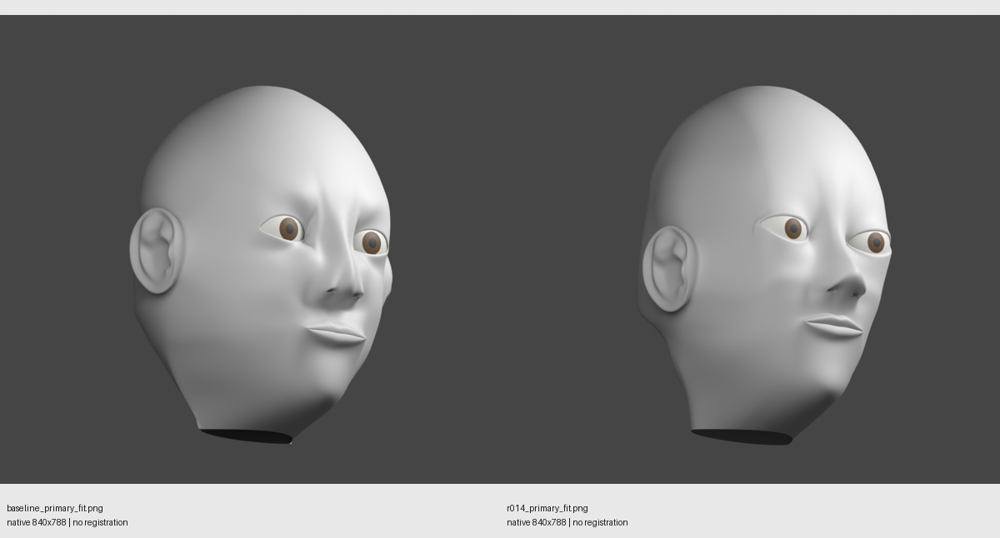
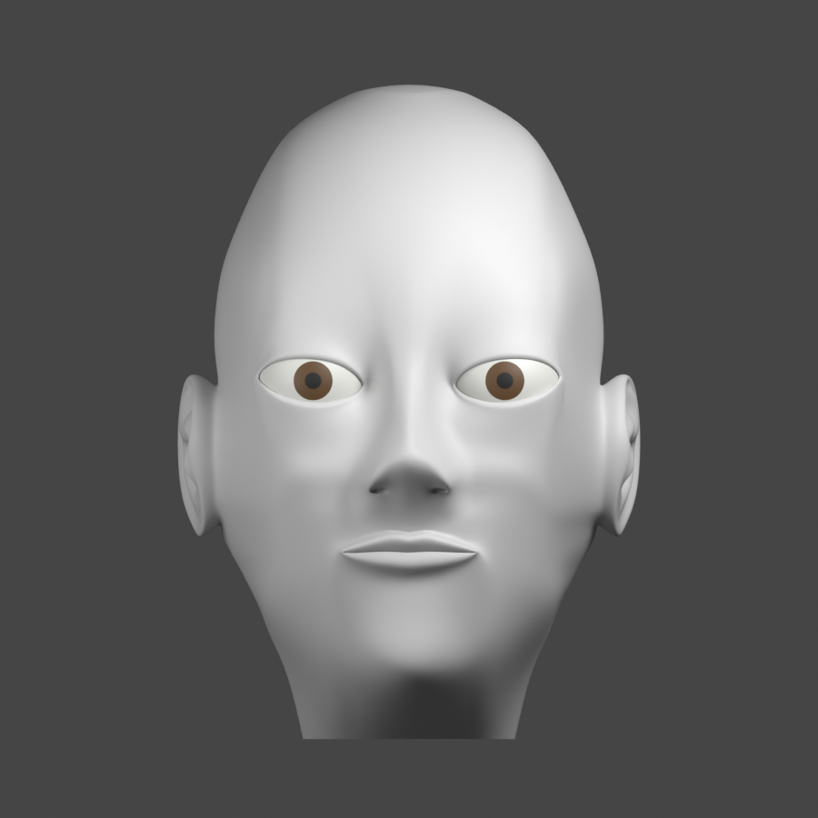
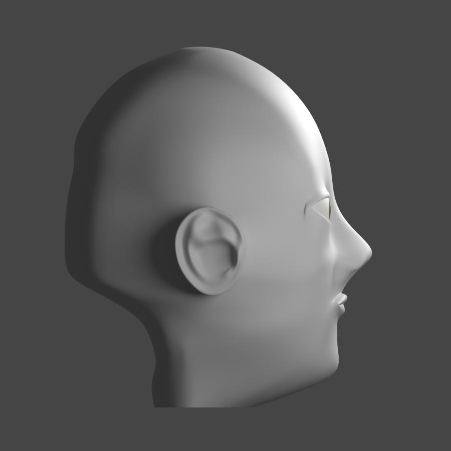
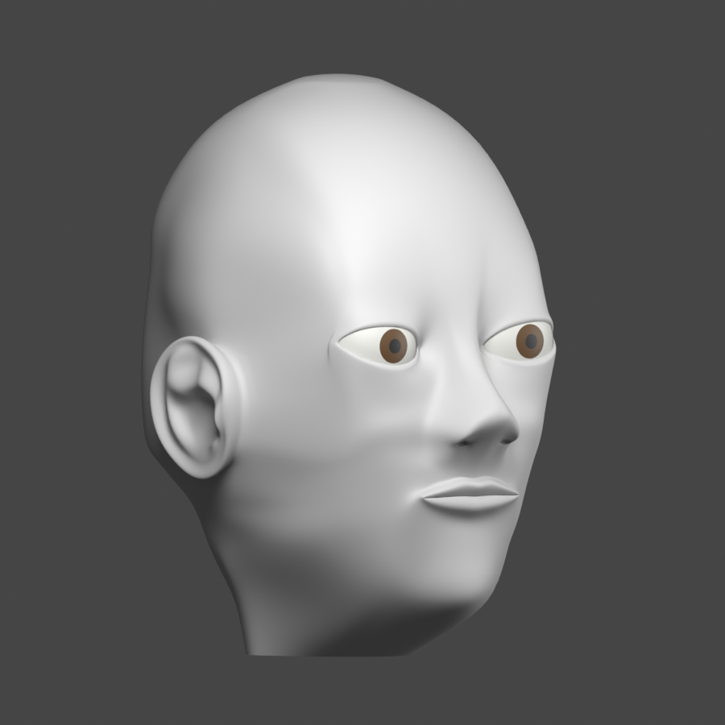
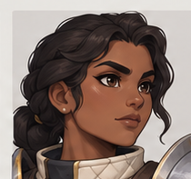
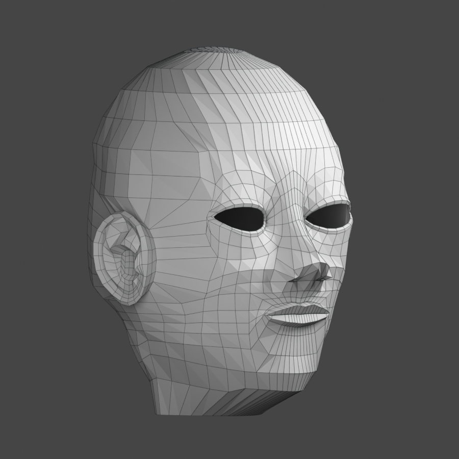
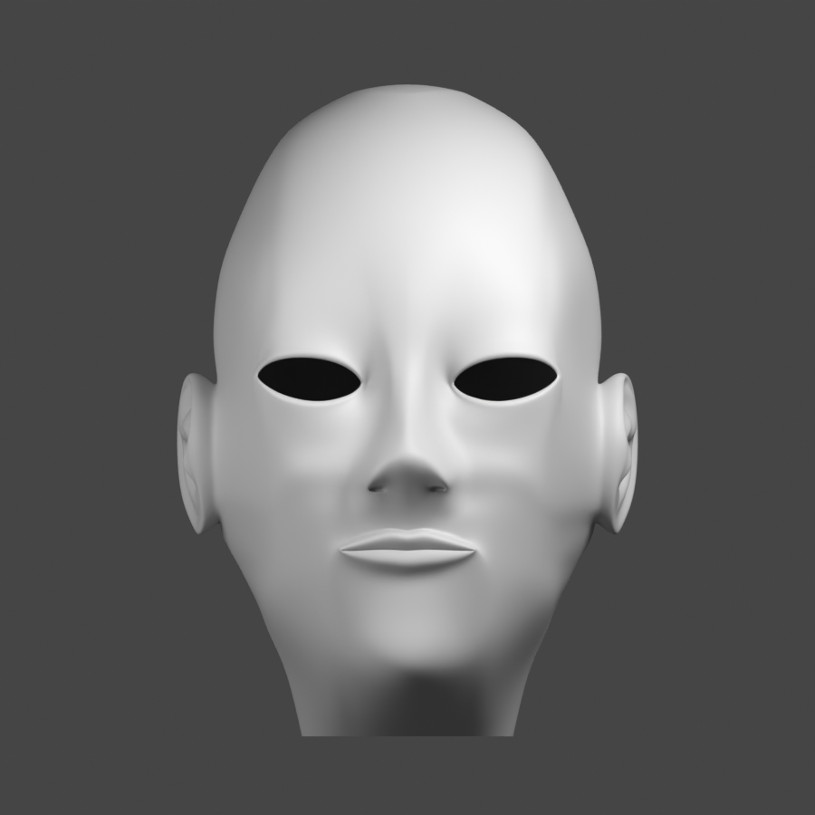

Ada · Head shape review
r014 retained · REVISE · No human forms approval
The head is improved, but the requested near-perfect likeness has not been achieved. Hair, eyebrows and eyelashes were untouched.


Uniform clay · front
Uniform clay · profile
Reversed key lightingRemaining shape work
- Lid coverage, corners and the exposed-globe expression.
- Nasal underside, columella and philtrum profile.
- Firm diagonal jaw and independent lower-cheek plane.
- Uneven socket/cheek transitions visible under opposite lighting.

Primary identity reference · native 210×197
Actual editable cage
Globes hidden · actual lid openingsFocused mesh check: one connected skin, no unintended internal non-manifold edges, no degenerate faces, and no detected non-adjacent self-overlaps in the evaluated neutral pose. These results do not establish artistic approval.
Frozen Blender checkpoint · Full review and intervention brief · Verification and hashes